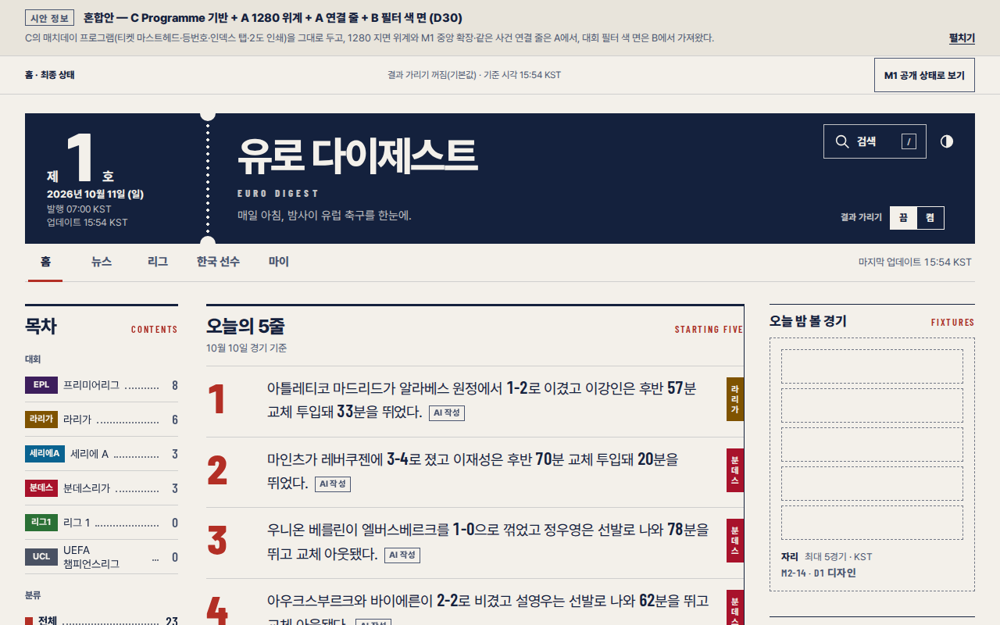
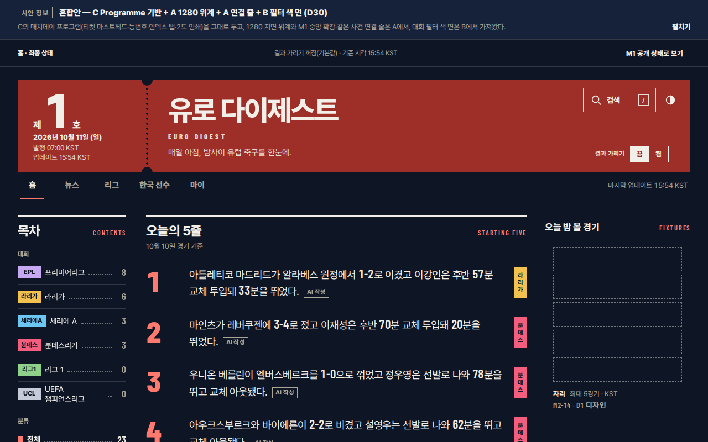

Broadsheet · 조간 1면
아침 신문 1면처럼 괘선·명조·단 조판으로 밤사이 소식을 지면에 앉힌다.
유로 다이제스트 · D0 전체 디자인 · 비교판 v0.1 · 2026-10-11
세 시안의 첫 화면을 같은 조건(DPR 1 · reduced-motion)으로 나란히 놓았다. 무엇을 고를지는 D0-06에서 사용자가 정하고, 고르기 전에는 구현하지 않는다. 자세한 근거는 comparison.md에 있다.
D0-06 사용자 결정(PRD §15 D30) 반영 · 확인 전에는 구현하지 않는다 · 아래 기존 비교는 그대로 둔다
C의 매치데이 프로그램(티켓 마스트헤드·등번호·인덱스 탭·2도 인쇄)을 그대로 두고, 1280 지면 위계·M1 중앙 확장·같은 사건 연결 줄은 A에서, 대회 필터 색 면은 B에서 가져왔다.
상태: 사용자 재확인 대기 — 확인되면 D0-08 DECISIONS.md 기록 → D0-09 DESIGN.md. 전체 페이지는 screenshots/concept-mix-{375,1280}-{light,dark}.png


이미지를 누르면 원본 크기로 열린다 · 1280 fold 윗부분은 시안 설명용 메타 띠(제품에는 없음)
아침 신문 1면처럼 괘선·명조·단 조판으로 밤사이 소식을 지면에 앉힌다.
잡지 표지처럼 거대한 숫자 '5'와 극굵은 고딕 커버 라인으로 아침 한 호를 연다.
경기장 프로그램북처럼 아침 한 호를 등번호 매긴 소책자로 엮는다.
전체 페이지 스크린샷에서 헤더 위끝(A 359px · B 352px · C 449px)부터 800px을 잘라 보여 준다. 전체 페이지 이미지 6장을 쓰므로 무거우면 접어 둔다.
결정은 사용자 몫이다(D0-06) · 고르기 전에는 구현하지 않는다
혼합을 고르면 혼합안 concept-mix.html을 한 번 만들어 다시 확인한다(D0-07).
| 출처 | 지시 |
|---|---|
| C 유지 | 티켓 마스트헤드(호수·날짜·발행 시각), 5줄 등번호 1~5, 대회 인덱스 탭, 도장형 칩, 2도 팔레트(라이트·다크), Pretendard 400·800 + Barlow Condensed, 상태 화면·S3·S4 |
| A → C | 1280 피드에서 imp가 가장 높은 카드 1장을 머리기사로(가로 전폭, 제목 한 단계 크게). 나머지와 375는 C 그대로 |
| A → C | 1280 M1 상태에서 우측 열이 비면 중앙 열을 넓히고, 5줄은 중앙 최상단에 둔다(D2). C의 '5줄 우측 sticky'는 쓰지 않는다 |
| A → C (선택) | 같은 사건의 국내·해외 카드 연결 줄. 태그 일치로 코드가 만들 수 있을 때만(추정) |
| 조정 | 게재 번호를 작게·보조색으로, 중요도 빈 칸 테두리 3:1 이상, 액센트 면 대비 5 이상, 크림 지면 채도 조금 낮춤 |
| B → C (선택) | 대회 필터를 고르면 피드 헤더 탭을 그 대회 색 면으로 바꾼다 |
좁은 화면에서는 표를 옆으로 밀어 본다
| A Broadsheet | B Cover | C Programme | |
|---|---|---|---|
| 레이아웃 | 컬럼 그리드 + 괘선, 중요도별 머리기사·2단 | 비대칭 표지 스프레드 + 풀블리드 면, 피드 1단 | 번호 리스트(팀시트) + 티켓 스텁 + 인덱스 탭, 1단 |
| 타이포 | 함렛 400·600 + Newsreader | 원티드 산스 가변 + Archivo(초압축 숫자) | Pretendard 400·800 + Barlow Condensed |
| 색 | 종이 모노톤 + 주홍(선 위주) | 흑백 고대비 + 볼트 면 1색 | 2도 인쇄(크림·네이비 + 레드) |
| 밀도 · 모션 | 낮음~중간 · 정적 | 표지 낮음 → 피드 중간 · 블록 와이프 | 중간~높음 · 인쇄형 |
| 장점 | 외국어 원제목이 세리프로 가장 품위 있게 읽힘. 이미지 없이 괘선만으로 완성. 매일 봐도 차분함 | 첫인상·브랜드 각인 최강. 숫자가 그래픽의 주인공. 다크가 특히 좋음 | 축구 고유 정체성. 375 첫 화면 4줄, 카드 가장 짧고 고름. D1·D2로 은유가 그대로 이어짐 |
| 단점 | 375에서는 1단 목록. 에너지 약함. 한글 명조는 OS마다 폴백이 다름 | 375 첫 화면을 표지가 차지(2줄). 피드 강조 과다. 라이트 볼트 전면이 눈부심 | 레트로·키치 위험. 게재 번호를 순위로 오해할 수 있음. 크림 지면. 흔한 서체 |
| 구현 난이도 | 중 | 중상 | 중 |
| 폰트 · JS | 403.2KB · 요청 3 · JS gzip 3.0KB | 387.6KB · 요청 2 · JS 2.9KB | 417.8KB · 요청 4 · JS 2.9KB · RFN 이름 변경 |
5점 만점, 높을수록 좋다(구현 난이도는 쉬울수록 높다) · 좁은 화면에서는 점수만 · 근거 전문은 comparison.md §2
| 기준 | A | B | C | |||
|---|---|---|---|---|---|---|
| 세련됨·차별성 | 4 | 가장 정제, 모던함은 덜함 | 5 | 첫인상 최강, 유행색 위험 | 4 | 축구 인쇄물 정체성, 키치 위험 |
| 3초 스캔·피로도 | 4 | 키커 → 세리프 제목, 조용 | 3 | 카드당 블록 2~3개, 극굵은 제목 | 5 | 위치 고정, 181px / 149px |
| 첫 화면 375 / 1280 | 4 | 3줄 / 5줄 | 3 | 2줄 / 5줄 | 5 | 4줄 / 4줄 |
| 다크 모드 | 4 | 조정된 야간판, 반전 수준 | 5 | 볼트가 숫자로, 라이트보다 좋음 | 4 | 독자적, 티켓 색이 테마마다 바뀜 |
| 접근성·대비 | 4 | 30쌍 통과, axe 1종(opacity) | 5 | 37쌍, axe 0 | 4 | axe 0, 최저 4.54(여유 적음) |
| M1 상태·적은 데이터 | 5 | 본문 3단 확장, 휴간 은유 | 3 | 거대 2·0이 브랜드와 충돌 | 4 | 거터는 강함, M1 1280 조정 필요 |
| 확장성 D1~D3 | 4 | 표·칼럼은 자연스러움 | 4 | 팀 표지·OG 강함, 표에선 약함 | 5 | 리그표·팀시트·포메이션이 원래 구성요소 |
| 구현 난이도 | 3 | 중요도별 지면 그리드 | 2 | 표지 375·1280 별도, 숫자 연동 | 4 | 1단 리스트 + CSS 도형 |
| 번들·폰트·CLS | 3 | 3파일, 명조 폴백 OS 차이 | 3 | 총량 최소, 극굵기 CLS 위험 | 3 | 총량 최대, RFN, 한글 CLS 최소 |
| 장기 운영 | 5 | 차분, 긴 제목·태그 변동 흡수 | 2 | 매일 같은 표지, 포스터 피로 | 4 | 리스트 리듬, 높이 편차 최소 |
| 합계 (50) | 40 | 35 | 42 | |||
WCAG 2.x 재계산 + axe-core(375·1280 × 라이트·다크 12조합)
| 시안 | 라이트 텍스트 | 다크 텍스트 | 비텍스트 | 메모 |
|---|---|---|---|---|
| A | 4.80 메타 / 박스 바탕 | 5.72 같은 쌍 | 3.47 / 3.67 UI 경계 | 오류 견본에서 흐리게 처리한 키커 4.47~4.49(axe) |
| B | 4.86 상승 ▲ / 배경 | 5.9 메타 / 표면 | 헤어라인 1.37(장식) | 볼트를 글자로 쓰지 않는 규칙(1.13) |
| C | 4.54 한국 표식 / 액센트 면 | 4.95 티켓 보조 글자 | 2.50 / 3.44 중요도 빈 칸 | 여유가 가장 적음 → DESIGN.md에서 보정 |
굵게 표시한 것이 추천 · 전체 선택지와 영향은 comparison.md §6